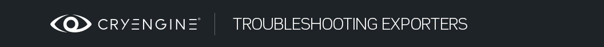
Обзор
Разделы
В этой теме вы найдете решения распространенных ошибок, связанных с объектами искусства, в CRYENGINE. Ошибки сортируются в соответствии с используемым инструментом создания цифрового контента (DCC).
3ds Max Ошибки
3ds Max Ошибки двигателя
Преобразование индексного потока
CRYENGINE ожидает, что для каждого ресурса будет предоставлен определенный формат индекса вершин. Конкретный формат выбирается во время компиляции: 16-битный или 32-битный (см. vtx_idx в ProjectDefines.h), в соответствии с движком это будет считаться «родным» форматом.
Чтобы вызвать любую функцию, связанную с геометрией или рендерингом, которая ожидает на входе собственный формат, вам необходимо предоставить данные в собственном формате. Файлы сетки (например, .cgf) могут хранить данные как в собственном, так и в неродном форматах. Если данные в файле сетки хранятся в неродном формате, то движку необходимо конвертировать их в собственный формат каждый раз, когда мы загружаем сетку. Этот процесс требует времени и может увеличить фрагментацию памяти, поэтому важно сообщить пользователю, что данные в сетке не являются собственными, показывая это предупреждение.
В 99% случаев это происходит из-за того, что система сборки настроена неправильно, например формат vertexindexformat не используется для вызовов RC.
После внесения изменений в CDF его не удается сохранить.
Файл определения символов сохраняется как обычно, но при повторном открытии или загрузке он выглядит без изменений. Это связано с тем, что CDF-файлы кэшируются при первом их открытии, и какие бы изменения вы ни вносили, вы не увидите их до тех пор, пока полностью не закроете и не откроете заново не только Редактор символов, но и сам Редактор.
Не удалось загрузить файл персонажа.
Предупреждение: Не удалось загрузить файл персонажа.
Предупреждение:... вызвано файлом 'objects/characters/human/us/officer/hands.chr'
Это довольно неоднозначная ошибка, обычно связанная с тем, что файл не существует по пути, который искал CDF. В приведенном выше случае кто-то переместил hands.chr из пути в ошибке в путь. Objects\Characters\Human\Hands каталог без обновления CDF. При поиске этих файлов может помочь использование Total Commander, поскольку он может выполнять поиск по файлам PAK.
Несоответствие символов LOD
Ошибки несоответствия LOD обычно выглядят как одна из следующих ошибок:
Предупреждение: Несоответствие символов LOD. Кость номер 52 другая. LOD0 Bip01 R Палец12 LOD3 Bip01 L Нога
Предупреждение: ... вызвано файлом 'objects/characters/heads/story/laurence_barnes/barnes.chr'
Предупреждение: Несоответствие символов LOD. Кость номер 53 другая. LOD0 Bip01 R Finger21 LOD3 Bip01 L Toe0
Предупреждение: ... вызвано файлом 'objects/characters/heads/story/laurence_barnes/barnes.chr'
Предупреждение: Несоответствие символов LOD. Кость номер 54 другая. LOD0 Bip01 R Палец22 LOD3 Bip01 L Пятка
Предупреждение: ... вызвано файлом 'objects/characters/heads/story/laurence_barnes/barnes.chr'
Но иногда возникает неоднозначная ошибка вроде этой:
Предупреждение: Не удалось загрузить персонажа, разное количество костей LOD0 и LOD1.
Предупреждение: ... вызвано файлом 'objects/characters/heads/story/laurence_barnes/barnes.chr'
Первое, что вы можете сделать, это открыть редактор персонажей, загрузить персонажа и проверить количество костей в раскрывающемся списке «Прикрепление костей». Сделайте то же самое и для LOD. Это дает вам хорошее представление о том, сколько костей недостает или лишнего, и позволяет сравнивать числа у каждого персонажа.
В инструментах риггинга есть функция, которая сравнивает две иерархии из двух отдельных файлов Max и указывает, какие элементы отличаются.
LOD Ошибка несоответствия каждой кости персонажа.
Часто это происходит потому, что один из LODов был экспортирован с применением «Сортировки костей» в экспортере. «Сортировка костей» была создана потому, что в некоторых случаях Макс по-разному читает/обходит одну и ту же иерархию. Таким образом, мы сортируем кости при экспорте, так что не имеет значения, как Макс читает/обходит.
Иерархии идентичны в 3ds Max, но не в Игре.
Проблема здесь часто может быть связана с тем, что для одного из файлов установлен флаг «Игнорировать чайников». Помните, что любой элемент иерархии с префиксом подчеркивания не будет экспортирован, включая его дочерние элементы.
Модель имеет дублированные суставы
Предупреждение: ... вызвано файлом 'objects/characters/heads/story/laurence_barnes/barnes_lod1.chr'
Предупреждение: Объекты модели/персонажи/головы/история/laurence_barnes/barnes_lod1.chr имеют дублированные суставы Bip01 L Ключица
Предупреждение: Объекты модели/персонажи/головы/история/laurence_barnes/barnes_lod1.chr имеют дублированные суставы Bip01
Предупреждение: Объекты модели/персонажи/головы/история/laurence_barnes/barnes_lod1.chr имеют дублированные суставы Bip01 R Finger22
Это странная проблема, которую можно решить, повторно экспортировав модель. У вас никогда не должно быть дубликатов костей, если вы не допустили ошибку, назвав их в 3ds Max (Макс позволяет вам иметь много узлов с одинаковым именем). Если вы получили эту ошибку при экспорте двуногого персонажа из студии персонажей, значит, экспортированный вами файл поврежден (поскольку дублированные соединения невозможны). Попробуйте перезагрузить файл и повторно экспортировать.
Модель имеет неправильную ориентацию
Загрузка персонажа 'объекты/персонажи/головы/история/laurence_barnes/barnes_lod1.chr'
Предупреждение: Модель имеет неправильную ориентацию.
В CRYENGINE стандартом является расположение персонажей по положительной оси Y. Убедитесь, что все символы соответствуют этому стандарту. Также убедитесь, что кость, указанная в списке «Экспорт костей», является корневой костью вашего персонажа и что к ней не применены никакие преобразования. (Проверьте, что его вращение равно [0,0,0])
Объект с морфами выглядит так, будто его вершины тают вниз при воспроизведении морфа
Это обычная проблема с головами персонажей, и проблема в экспортере. Если у вас есть несколько объектов в очереди на экспорт или выбран параметр «Экспортировать файл на узел», это может произойти, если у них есть Morpher. Решение состоит в том, чтобы загружать каждый узел по отдельности и экспортировать их один за другим, используя флаг «Пользовательское имя файла» и вводя имя узла.
Несколько обновлений в каждом кадре
Предупреждение: несколько обновлений на кадр: FrameID: 211df
Предупреждение: ... вызвано файлом 'objects/characters/human/us/nanosuit/nanosuit_us.chr'
Это ошибка, вызванная кодом, и не является проблемой актива. Пожалуйста, отправьте его своему программисту персонажей.
3ds Max Общие ошибки экспортера
ResourceCompiler не найден
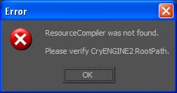
Убедитесь, что вы указываете на папку RC в настройках CRYENGINE.
CryExport Проверка
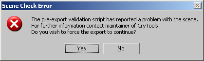
Это означает, что CryTools сообщил экспортеру, что с тем, что вы собираетесь экспортировать, что-то не так. Многие предупреждения проверки .obj CryExport являются напоминанием о том, что вам нужно использовать, например, шейдер Crytek вместо Blinn. Обычно это предупреждение можно игнорировать. Эта ошибка также будет отображаться, если в панели управления CryTools включено «подавление всех предупреждений», однако вы не получите ни одного реального предупреждения. Они будут отображаться на консоли, но их диалоговые окна будут скрыты.
3ds Max Ошибки экспорта объектов
Нет узлов для экспорта
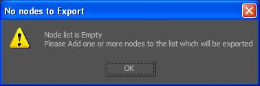
Это сообщение об ошибке отображается, если в список экспорта объектов не добавлена сетка.
Начальные позиции скелета отсутствуют
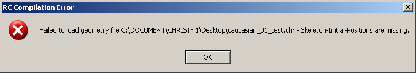
Эта ошибка по сути означает, что скелет не был экспортирован в компилятор ресурсов.
Самая распространенная проблема заключается в том, что вы экспортируете сетку, которая не связана с костями. Если да, сохраните вес вашего персонажа, повторно примените Skin или Physique, а затем повторно экспортируйте. Обычно это решает проблему. Если вы уверены, что объект настроен правильно, проверьте наличие в той же сцене других объектов с таким же именем.
Вырожденные текстуры
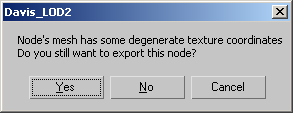
Вырожденные лица
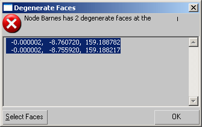
Материал не настроен на шейдер Crytek
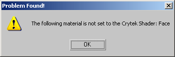
Вы получите эту ошибку, если к экспортируемому объекту не применен шейдер Crytek. Объекты, экспортируемые в CRYENGINE, должны иметь этот шейдер, установленный в разделе «Основные параметры шейдера» в 3ds Max.
Аномальный масштаб

Хорошей практикой является не экспортировать в игру вещи, к которым применены преобразования. Это предупреждение является всего лишь напоминанием. Сбросить форму решит это.
Аномальное вращение
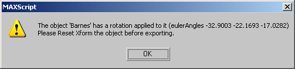
Рекомендации по ненормальному масштабу также применимы к ненормальному вращению. Вам следует обнулить повороты ваших сеток/персонажей перед их экспортом в движок.
Ошибки экспорта персонажей 3DS Max
У вас есть деформируемые вершины в 3ds Max.

Вы всегда должны стараться держаться подальше от деформируемых вершин, но иногда они просто ошибочно появляются, и хотя сустав все еще имеет <4 звеньев, он думает, что он деформируемый. Наш экспортер нормализует любые деформируемые вершины, поэтому, если у вас действительно есть деформируемые вершины с >4 связями, эти вершины будут нормализованы при экспорте и могут значительно отличаться в движке.
Дело не в том, что персонаж с деформируемыми вершинами не будет экспортироваться, просто вам следует проверить свои деформируемые вершины, чтобы убедиться, что они имеют <4 ссылок и не находятся в критическом месте. Вам также следует рассмотреть возможность их разблокировки, отмены назначения и жесткого переназначения.
Персонаж не был экспортирован в режиме рисунка.
Персонажа необходимо экспортировать, когда он находится в Режим фигуры или у него возникнут серьезные проблемы с весом в редакторе персонажей. Скриншоты выше были сделаны, чтобы продемонстрировать это.
NOTE: Помните, что первый кадр текущей анимации оснащения выглядит точно так же, как в режиме фигуры.
Удалить кэш шейдеров
Удалите кэш шейдеров и перезапустите редактор. Каталоги кэша шейдеров расположены здесь: User\Shaders\Cache\CGPShadersGame\Shaders\Cache\CGVShaders
Не удаляйте каталоги, а только все, что в них.
3ds Max Экспорт ошибок анимации
Не могу найти CBA

Обычно эта ошибка возникает при экспорте файла .caf по пути, не указанному в файле CBA для конкретного символа.
Чтобы изменить путь, измените строку <Animation Path="экспортированная папка в каталоге анимации"/> в файле .cba.
Кроме того, во избежание этой ошибки убедитесь, что у вас есть файл Animations.cba в каталоге анимации.
Примечание: Экспортер перемещается вверх, чтобы найти файл .cba в экспортированном каталоге.
Нет костей для экспорта
Это сообщение об ошибке отображается, если в список экспорта костей не добавлена кость или если перед именем экспортированной кости стоит знак подчеркивания.
Экспорт анимации: система не может найти указанный файл, (0) файлов преобразовано
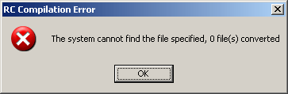
Maya Ошибки
Инструменты Cry-Maya включают в себя инструмент проверки, который поможет пользователю обнаружить проблемы, которые могут привести к ошибкам или простой путанице. Многие из них отмечены ниже.
Общие ошибки
Нет узлов

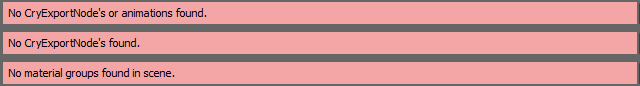
Это происходит, когда в сцене Maya отсутствуют какие-либо ресурсы с узлами группы, у которых нет правильного именования или настройки узлов группы.
Ошибка проверки
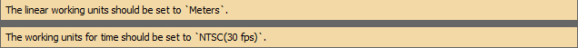
Это происходит, когда сцена Maya не имеет желаемых настроек, которые используются в CRYENGINE. Это рекомендации пользователей, чтобы предотвратить дальнейшую путаницу в будущем.
Общая ошибка
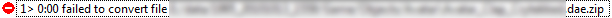
Это может означать множество вещей, но в большинстве случаев это связано с тем, что персонаж не был привязан к установке перед экспортом.
Пожалуйста, сохраните


Сцену необходимо сохранить, прежде чем ее можно будет экспортировать.
Количество индексов узла 'p'
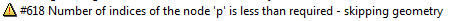
Обычно это означает, что в узле экспорта есть геометрия с цветами вершин и геометрия без цветов вершин.
Экспорт ошибок анимации
Не могу найти CBA

Обычно эта ошибка возникает при экспорте файла .caf по пути, не указанному в файле CBA для конкретного символа.
Чтобы изменить путь, измените строку <Animation Path="экспортированная папка в каталоге анимации"/> в файле .cba.
Кроме того, во избежание этой ошибки убедитесь, что у вас есть файл Animations.cba в каталоге анимации.
Примечание: Экспортер перемещается вверх, чтобы найти файл .cba в экспортированном каталоге.
Нет костей для экспорта

Это сообщение об ошибке отображается, если в список экспорта костей не добавлена кость или если перед именем экспортированной кости стоит знак подчеркивания.